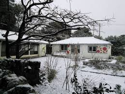
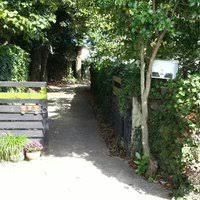
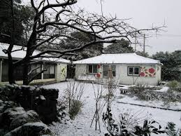
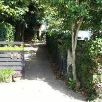

요안도라 소개
알립니다
게스트하우스 예약은 전화 070-###-####로 직접 통화하시는게 가장 정확하고 빠릅니다.
인터넷 전화이므로 시외 전화 요금이 부과되지 않습니다.
 



요안도라는 게스트 하우스 형식의 농어촌 민박입니다.
성산의 날씨는 다음주 내내 높은 구름에 햇살 가득이라고 합니다.
오늘은 사진에 보이는 긴 돌담을 따라 들어오는 요안도라 올레 입구에 특곤색의 대문을 달았습니다.
내일은 두달 여동안 밖거리에 만든 게스트 하우스에 연백색의 황토 페인트를 칠할 예정입니다.